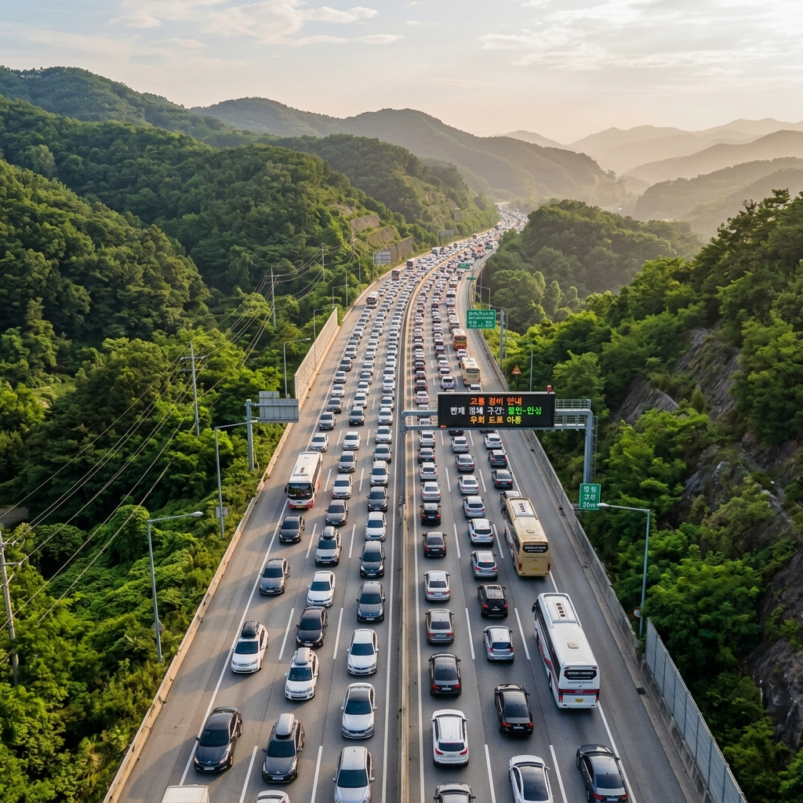
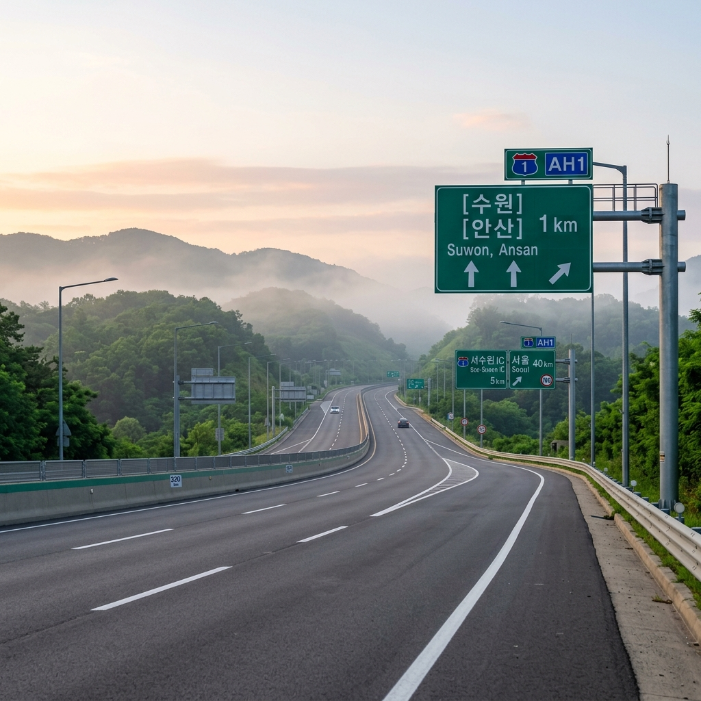
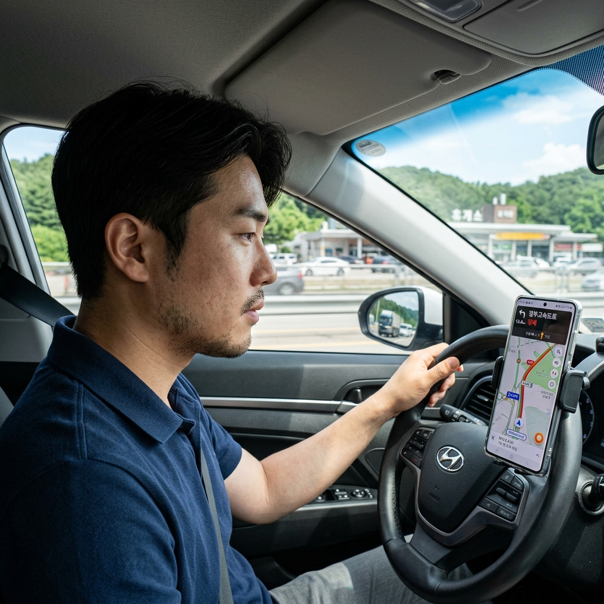

작년 여름 휴가 귀경길을 잘못 잡아서 4시간 넘게 고속도로에 갇혔던 기억이 있습니다.
그 이후로 출발 시간과 방향을 꼼꼼히 따지기 시작했고, 올해는 주요 혼잡 구간과 시간대를 사전에 정리해 두었습니다.
매년 여름 휴가철 정체 패턴은 비슷하게 반복됩니다. 경험에서 나온 실전 팁과 함께 방향별 출발 타이밍을 정리했습니다.
여름 휴가철은 국내 이동 수요가 한 해 중 가장 집중되는 시기입니다.
7월 말~8월 초 2주 동안 전체 연간 피서 인구의 상당 비중이 같은 기간, 같은 방향으로 이동합니다.
특히 강원도(동해안·계곡), 충청남도(서해 바다), 전라남도(남해·섬) 방면 3대 축에 수요가 몰립니다.
출발 시간이 비슷하면 고속도로 진입 자체가 병목이 됩니다. 나들목(IC) 진입 정체가 본선 정체를 악화시키는 구조입니다.

동해 방면(영동고속도로·동해고속도로)
하행 최혼잡: 금요일·토요일 오전 9시~오후 2시
귀경 최혼잡: 일요일 오후 2시~저녁 8시
서해·충청 방면(서해안고속도로·경부고속도로)
하행 최혼잡: 금요일 오후 4시~자정, 토요일 오전 7시~12시
귀경 최혼잡: 일요일 오후 1시~저녁 9시
남해·전라 방면(남해고속도로·호남고속도로)
하행 최혼잡: 금요일 오후 3시~토요일 오전 10시
귀경 최혼잡: 일요일 오후 12시~저녁 8시
위 시간대는 최근 수년간 반복되는 패턴입니다. 실제 출발 전 한국도로공사 도로정보(ex.co.kr)에서 실시간 교통 정보를 반드시 확인하세요.
하행(여행지 방면)은 금요일 오전 6~8시 또는 토요일 새벽 4~6시가 가장 한산합니다.
금요일 오전에 반차를 내고 출발하면 정오 이전에 목적지에 도착할 수 있습니다. 이 방법이 가장 극적인 시간 단축 효과를 줍니다.
귀경(서울 방면)은 일요일 오전 6시 이전 또는 월요일 이른 아침이 효과적입니다.
일요일 낮 귀경이 불가피하다면, 오후 2~3시보다 오후 5시 이후를 노리는 것이 낫습니다. 최혼잡 시간대를 넘겨 출발하는 역발상 전략입니다.
내비게이션 실시간 우회로 기능을 적극 활용하세요. 단, 같은 시간대에 수만 명이 같은 우회로로 몰리면 우회로도 막히는 현상이 발생합니다.
주요 우회로 예시:
- 영동고속도로 혼잡 시 → 중앙고속도로 우회(장거리지만 상대적으로 여유)
- 서해안고속도로 정체 시 → 서천공주고속도로 + 논산천안고속도로 우회
- 남해고속도로 정체 시 → 88고속도로(광주대구고속도로) 활용
단, 우회로 효과는 실시간 상황에 따라 달라집니다. 출발 전 한국도로공사 앱과 네이버 지도·카카오맵에서 동시에 확인하는 것이 좋습니다.

주요 휴게소는 피서 성수기에 주차 공간이 꽉 차고 식당 대기가 30~60분 이상 걸립니다.
큰 규모의 유명 휴게소보다 바로 다음 소형 휴게소를 이용하는 방법이 효과적입니다. 덜 알려진 작은 휴게소는 상대적으로 여유롭습니다.
식사는 출발 전 미리 해결하거나 도시락을 지참하는 것이 시간 절약에 유리합니다. 휴게소 대기 시간이 누적되면 전체 이동 시간이 크게 늘어납니다.
정체 구간에서 차간 거리를 충분히 유지하는 것이 가장 중요합니다.
느리게 움직이는 차량 사이에서 갑자기 멈추는 경우가 많아 추돌 사고 위험이 높아집니다. 피로 누적으로 집중력이 떨어지는 장거리 운전일수록 주의가 필요합니다.
2시간 이상 운전했다면 반드시 휴게소에서 10~15분 휴식을 취하세요. 졸음운전은 정체 구간에서 특히 위험합니다.
한국도로공사 도로정보 앱(ex.co.kr): 고속도로 구간별 소요 시간·사고 정보를 가장 신속하게 제공합니다.
네이버 지도·카카오맵: 실시간 교통 상황과 예상 소요 시간을 교차 확인하는 데 유용합니다.
KBS 교통방송(1197.3MHz): 라디오를 통한 실시간 구간 정보는 운전 중에도 핸즈프리로 청취할 수 있어 편리합니다.

정체 구간에서 에어컨을 장시간 가동하면 배터리 소모가 예상보다 빠를 수 있습니다.
여름 성수기에는 고속도로 급속 충전소에도 대기가 발생합니다. 80% 이하로 내려가기 전에 여유 있게 충전 계획을 세우는 것이 좋습니다.
충전 정보는 환경부 전기차 충전서비스(ev.or.kr) 또는 각 제조사 앱에서 실시간으로 확인할 수 있습니다.
고속도로 정체를 완전히 피하려면 대중교통이 가장 확실합니다.
KTX·SRT는 강릉(동해)까지 약 2시간, 광주(남해)까지 약 1시간 40분으로 자가용 최적 시간과 비슷합니다. 성수기에는 최소 1~2주 전 예매가 필요합니다.
자녀가 어리거나 짐이 많은 경우에는 자가용이 여전히 편리합니다. 출발 시간만 잘 조율한다면 대중교통 못지않은 이동 시간을 확보할 수 있습니다.
① 금요일 오전 또는 토요일 새벽 조기 출발
② 귀경은 일요일 새벽이나 월요일 아침으로 하루 늦추기
③ 한국도로공사 앱·네이버·카카오맵 실시간 교통 교차 확인
④ 큰 휴게소 건너뛰기, 소형 휴게소 활용
⑤ 2시간 운전 후 반드시 10~15분 휴식
여름 휴가 이동에서 정체는 피할 수 없지만, 출발 타이밍으로 상당 부분 줄일 수 있습니다. 한 시간의 투자로 3~4시간의 정체를 피하는 것이 여름 드라이브의 핵심입니다.